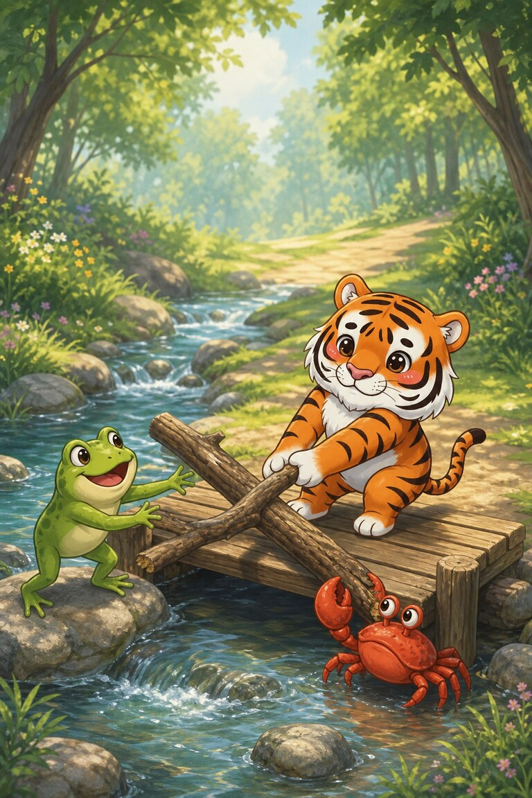
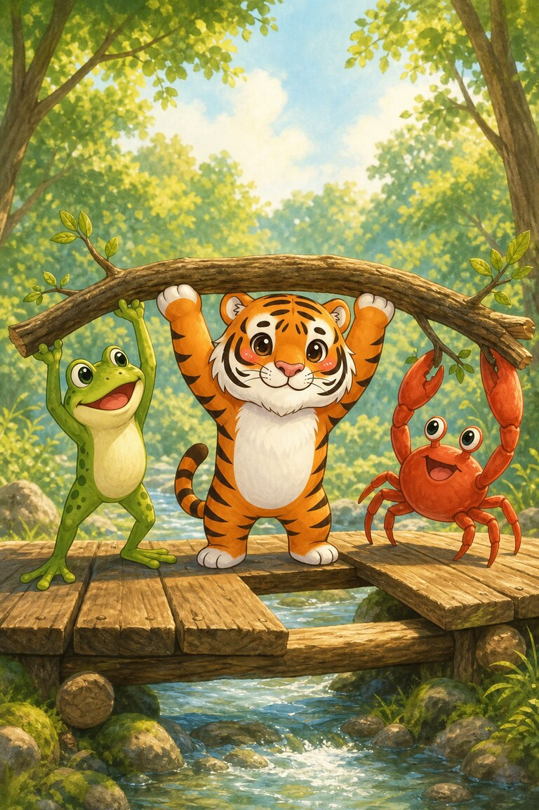
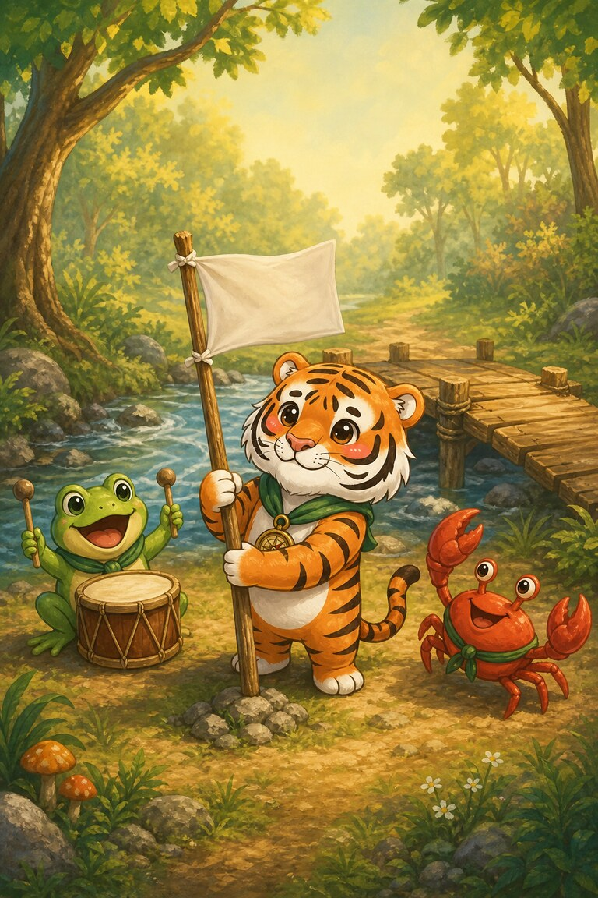
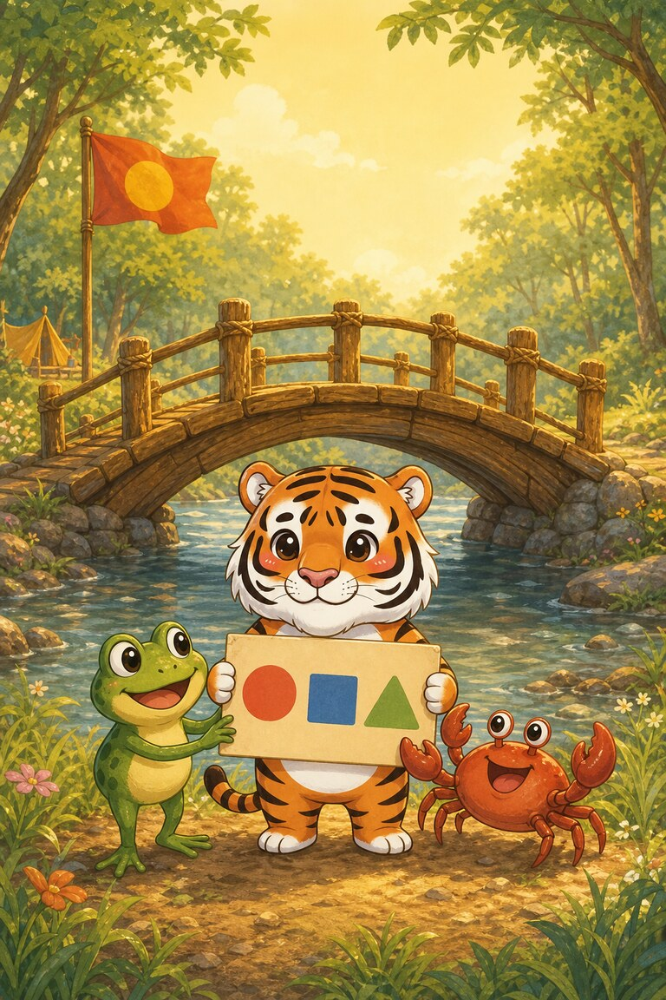

Page 1 of 5
Stripe-Scout must cross a bridge to plant the camp flag. A branch blocks the first step.
A five-page bridge-building adventure for practising blends like fl, cr, dr, st and pl.
Stripe-Scout must cross a bridge to plant the camp flag. A branch blocks the first step.

She drags the branch, but it will not shift. A frog and a crab stop to help.

“Grip, lift, step!” calls Stripe-Scout. The three friends lift the branch from the planks.

They cross, plant the flag, and clap. The frog taps a drum while the crab does his best dance.

Stripe-Scout adds a sign: FRIENDS HELP. The strongest part of the bridge is the team upon it.
They lift the branch together. Stripe-Scout, the frog, and the crab lift the branch from the planks as a team.
SnackPack Sentences & Spelling has the full Reading Trail, longer stories, word packs and eight literacy games.
Next storySub‑Zero’s Magic‑E Lantern
Know a family or class who would enjoy it?